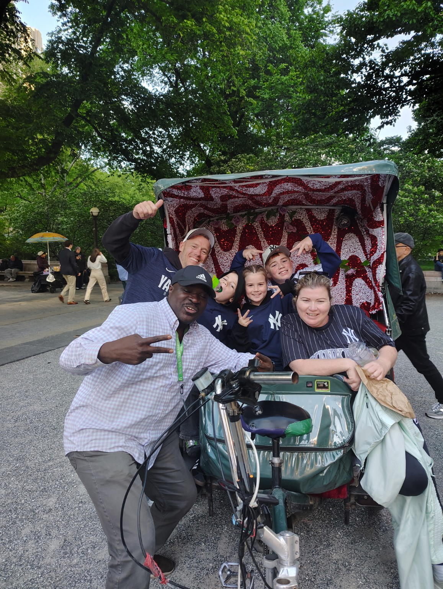
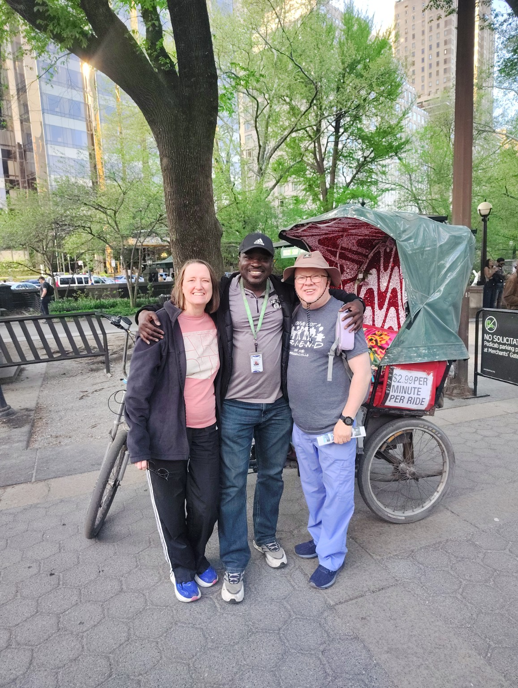
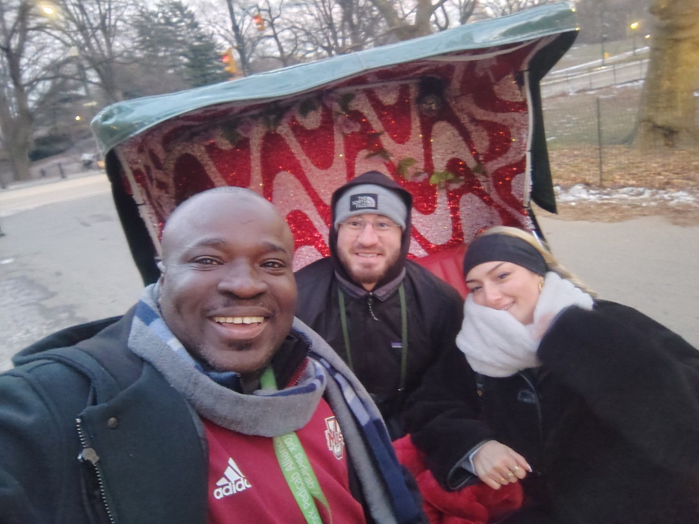
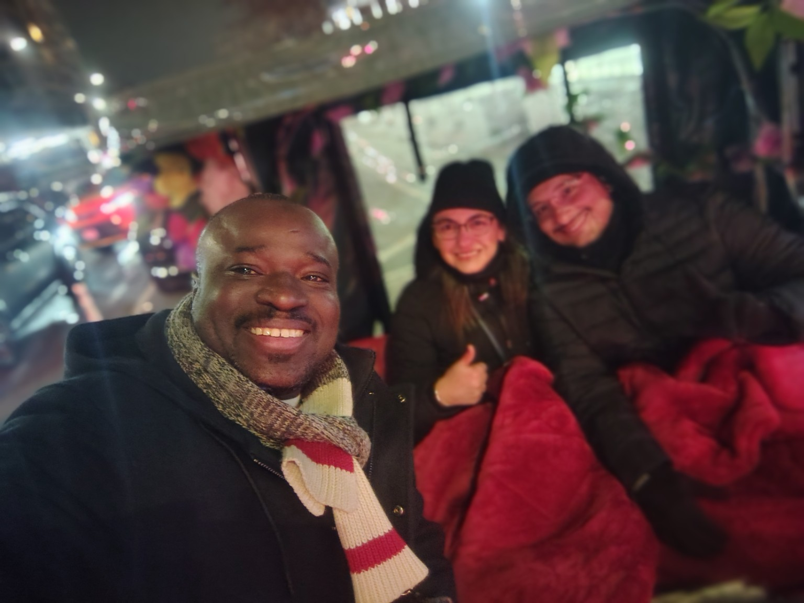
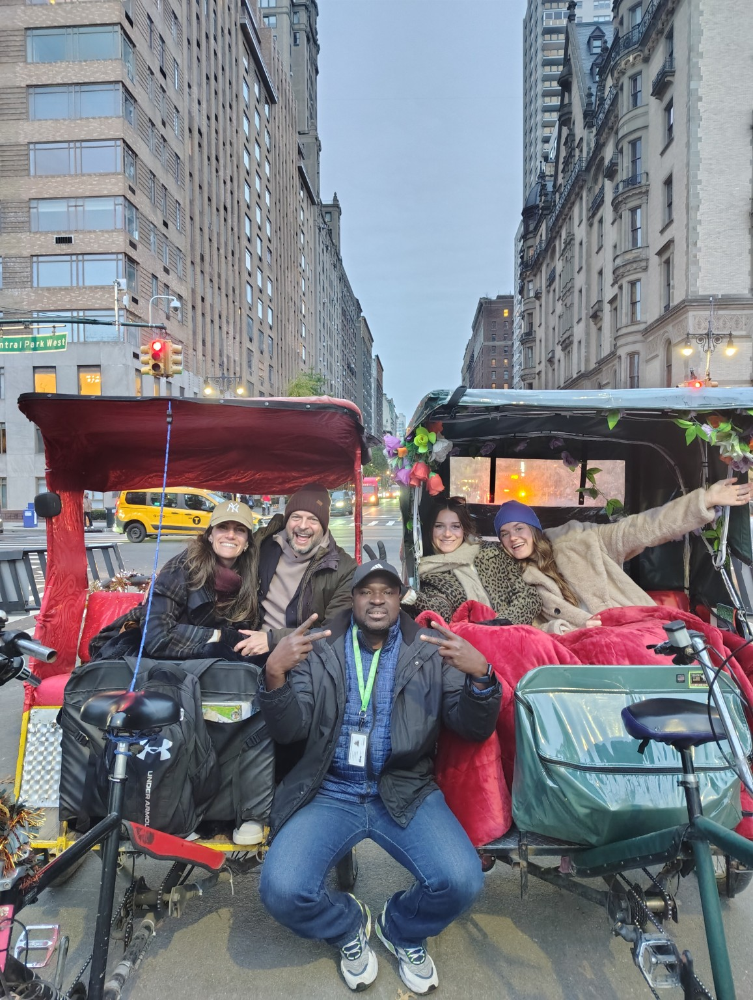
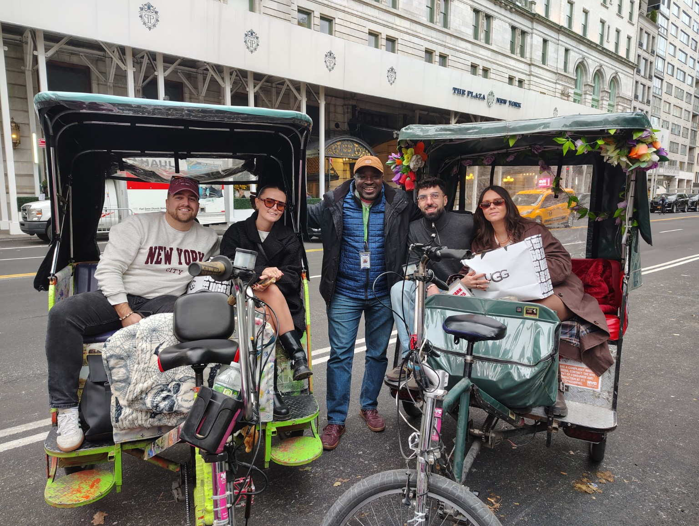
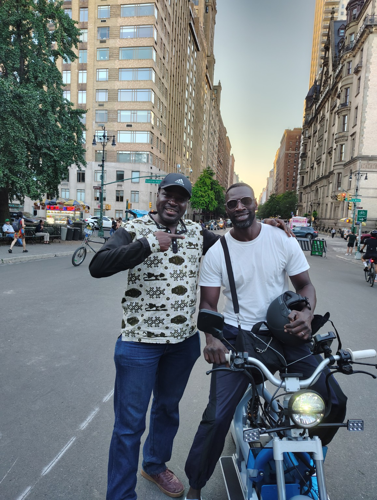
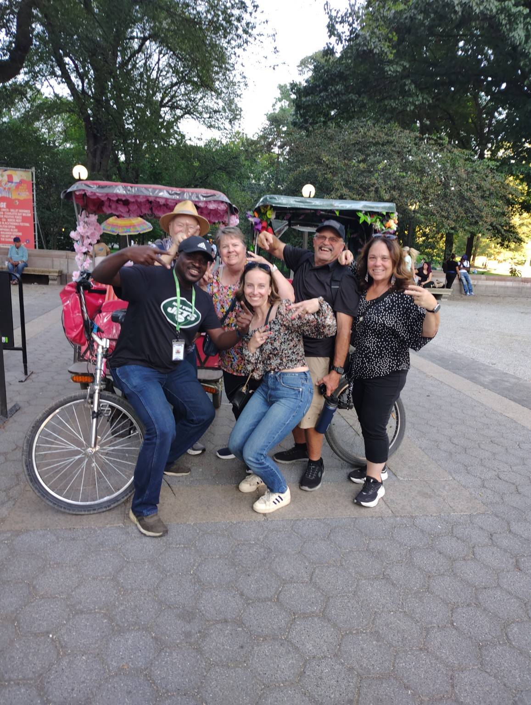
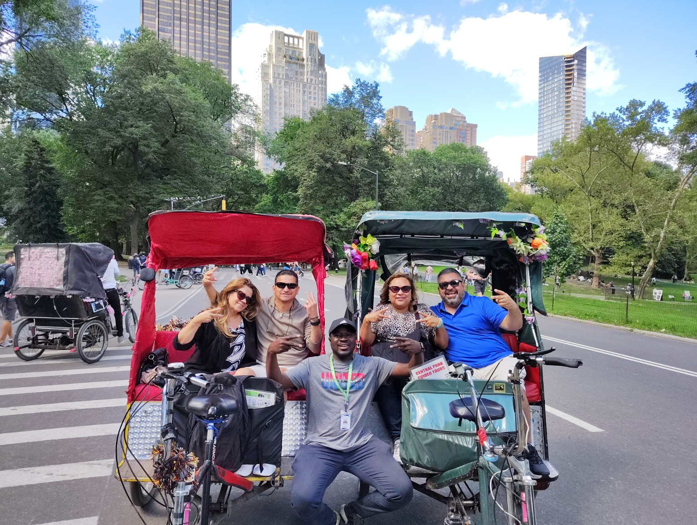

Pedicab Experiences
Real moments with Makan and guests in New York City.

Makan & Tour Guests
Private Pedicab Experience
Central Park Tour Guests
Evening Pedicab Tour
Group Pedicab Experience
Guests & Pedicab Drivers
New York Sightseeing
Central Park Memories
Private Tour GuestsCentral Park Attractions
Discover some of the iconic locations featured across our Central Park tours.
 Wollman Rink
Wollman Rink Balto Statue
Balto Statue The Mall & Literary Walk
The Mall & Literary Walk Imagine Mosaic – Strawberry Fields
Imagine Mosaic – Strawberry Fields Cherry Hill Fountain
Cherry Hill Fountain Cleopatra’s Needle (Obelisk)
Cleopatra’s Needle (Obelisk) Alice in Wonderland
Alice in Wonderland Belvedere Castle
Belvedere Castle Harlem Meer
Harlem Meer Gapstow Bridge
Gapstow Bridge Bow Bridge
Bow Bridge